Polygons
Draw cells as their segmentation outlines, from the whole section down to a single cell.
Tutorial in preparation
This tutorial is being written. The outline below shows what it will cover.
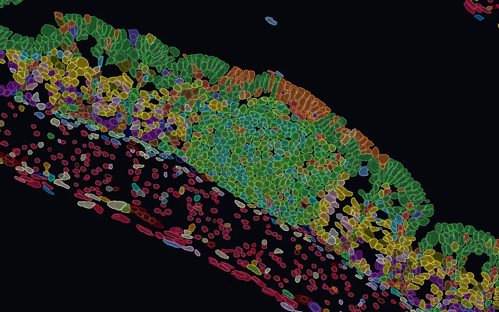
By default every cell is a point. Boundaries draw each cell as its real shape instead: the outline that segmentation found, filled or not, and the nucleus inside it. The shapes take the colours of the points, so every tab that paints the tissue paints the outlines too, and hover and click still reach the cell beneath.
This page shows how to get outlines into a dataset, how to draw them, and what to check when none appear. The examples use a Xenium section of mouse small intestine with 215,195 cells.
Outlines come as kinds, usually cell and nucleus. A kind can be added when the file is imported, or later to a dataset that is already open. Choose when.
At import
Open the Cell Boundaries tile.
In the import wizard (see Importing), the tile sits under Images and boundaries. It counts the kinds that will be imported, here 2/2. If PointillViz found no outlines in the file it says so; a label mask can still give them.
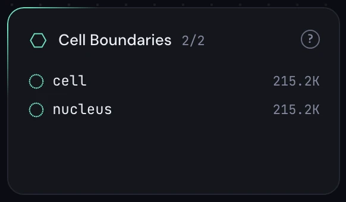
Tick the kinds.
Polygons in your file lists what the file holds, with the number of polygons, their vertices and how many are empty. Both kinds are ticked at first. Below, Label mask takes the path of a mask image on the server; see Accepted files.
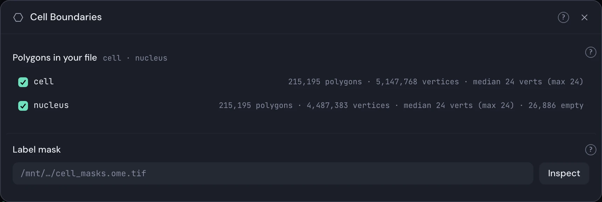
Convert.
The outlines are cut into tiles during the conversion, about 20 seconds for 215,000 cells; the log says Wrote 1,347 polygon tiles. Afterwards the Boundaries button is enabled.
Later
Press + beside Boundaries.
Before any outlines exist the Boundaries button is greyed out with No cell boundaries in this dataset; the + beside it opens Add cell boundaries. If the + is greyed too, its ? says why (see the note above).
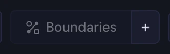
Name the file and press Inspect.
Give the server path of a label mask, a SpatialData store or an .h5ad. Inspect lists every set of outlines it finds, one row per kind.
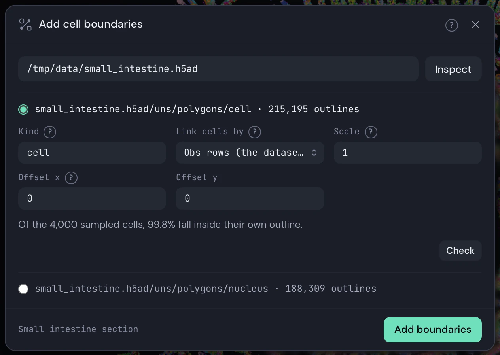
Check the fit.
Choose a row and give it a Kind. Link cells by says how an outline finds its cell; the line below reports how many sampled cells land inside their own outline. A low figure means Scale or Offset is off, and Check tests a change.
Press Add boundaries.
The sheet can be closed while it works; the + fills like a ring. When it is done a message says Cell boundaries added and the kind is switched on, without reloading. Add one kind at a time: run it again for the nucleus.
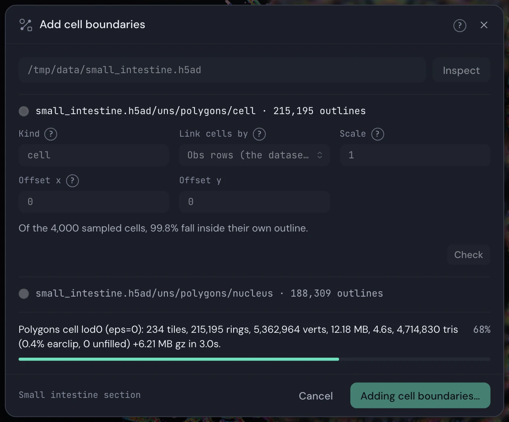
Accepted files
Three kinds of source are read. A cell without an outline keeps its point, and an outline that matches no cell is left out and counted in the log.
| Source | What it needs | What becomes of it |
|---|---|---|
| A label mask: TIFF, OME-TIFF, OME-Zarr or PNG | One channel, one whole number per cell, 0 for background | Each label is traced into an outline of at most 254 vertices. A label in several pieces keeps its largest, and a hole inside it is covered. |
| SpatialData shapes | A store with a shapes table | Read as they are; a name containing nuc becomes a nucleus, any other a cell. |
| Polygons in an .h5ad | uns["polygons"][kind] with coords and offsets; to add them later, the .h5ad the dataset was made from | One outline per cell row. scripts/xenium_to_h5ad.py writes them from a Xenium output. |
Everything is switched on the toolbar and in the Style panel. Outlines are off each time a dataset opens.
Layer
Appears when cell boundaries were mapped at import; the + beside the button adds them.
Pick the kinds
Press Boundaries and tick cell, nucleus or both. The menu stays open while you tick, and the button then names what is on, such as cell + nucleus. Clearing every tick turns outlines off.
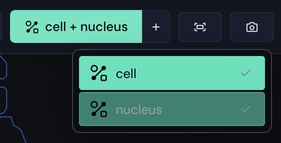
Outline, Fill or Both
The Boundaries row of Style appears once a kind is on. Outline strokes each ring in the cell's colour. Fill fills it with no stroke, so cells cover their points. Both fills it and rims it with a lighter shade of the same colour. The choice is kept per dataset.
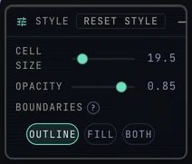
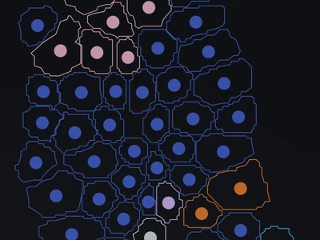
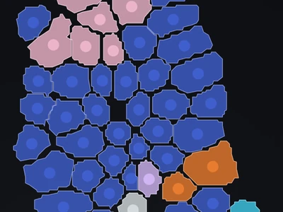
Zoom in
Nothing is drawn while the whole section is in view. For a 15 µm cell, coarse outlines start at about 5 px across, finer ones at about 14 px, and the exact shape at about 35 px. Only the tiles in view are loaded, so panning stays light.
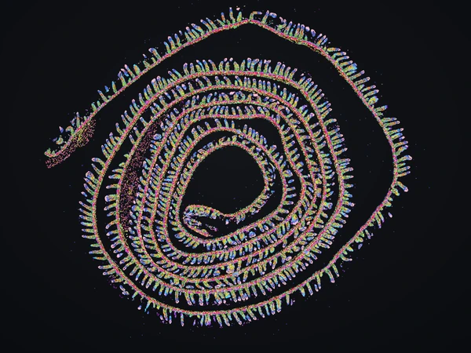
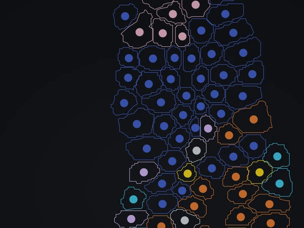
Colour by anything
An outline has no colour of its own. It takes the colour of its cell, so whatever paints the tissue paints the outlines: cell types, a gene, a continuous value, a niche. Pinned focus and gating dim outlines the same way they dim points.
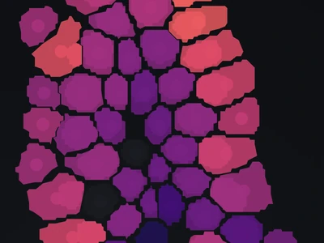
Cell and nucleus
Tick both kinds to see the nucleus inside each cell. A nucleus takes its cell's colour, so it shows best in Both, where its rim is lighter. A cell whose nucleus was not segmented has none; in this section that is 26,886 of 215,195.
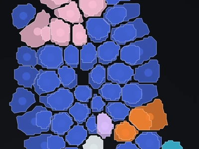
Opacity and focus
Opacity in Style fades outlines and fills together with the points. Cell size does not change them. In Outline, dimming the cells in the Image tab keeps the outlines at full strength; in Fill and Both they fade with the cells.
Hover and click
Outlines are not clickable. Hover, click and the lasso reach the points underneath, which stay drawn.
A capture shows what is on screen: kinds, mode, colours and zoom. Press C to keep the view or S for Export… (see Exporting). A higher resolution, 2× to 8×, draws crisper lines, and the capture waits until the outline tiles have loaded. There is no vector export of outlines.
| What you see | Why, and what to do |
|---|---|
| The Boundaries button is greyed out | The dataset has no outlines. Import them, or add them with the + beside it. |
| The + is greyed out too | Its ? gives the reason: an atlas, a 3D or non-spatial dataset, or several sections side by side. Import one section at a time. |
| The button is on, but only points show | Zoom in; outlines appear once cells are a few pixels wide. Check that the button names at least one kind, and that the view is the 2D map, not the embedding or the Landscape. |
| Fill and Both are greyed out | The tiles hold outlines only. Convert the dataset again to enable them. |
| Outlines sit beside their cells | The units differ. When adding later, correct Scale and Offset and watch the fit line; at import, set the pixel size under Space. |
| Import skipped them | The log says why: the dataset is 3D, or has several sections laid out on a grid. Outlines kept anywhere in the file other than uns["polygons"] need a label mask. |